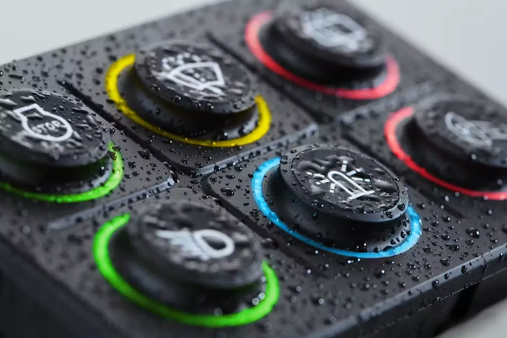

Engineered for Fishing Boats Applications.
Discover EAO Series 09 HMI components, engineered for rugged, intuitive control in demanding marine and shipping environments.
Multi-function Series 09 keypads combine rotary control, push-button operation, and joystick functionality in a single compact HMI, helping reduce hardware while maximizing functionality.
RGB‑illuminated actuators and indicators provide high‑visibility status feedback in low‑light and harsh maritime conditions.
IP‑rated, sealed switch components ensure long‑lasting performance in wet, saltwater, and high‑vibration marine environments.
Modular, customizable Series 09 devices support tailored marine control panels from standard products to fully engineered solutions.

Fischerboot-Hersteller und Werften verlassen sich weltweit auf EAO, wenn Bedienelemente unter widrigsten Bedingungen zuverlässig funktionieren müssen. Mit geschützter Kontakttechnologie, robusten Materialien und langer Lebensdauer reduzieren EAO-Komponenten Wartungsaufwand und Ausfallrisiko im Feld.
Contact EAO today to enhance the safety and reliability of your next application.

Ob konkretes Projekt oder erste Anfrage – wir beraten Fischerboot-Hersteller und Werften bei der Auswahl der passenden HMI-Lösung.
FAQ